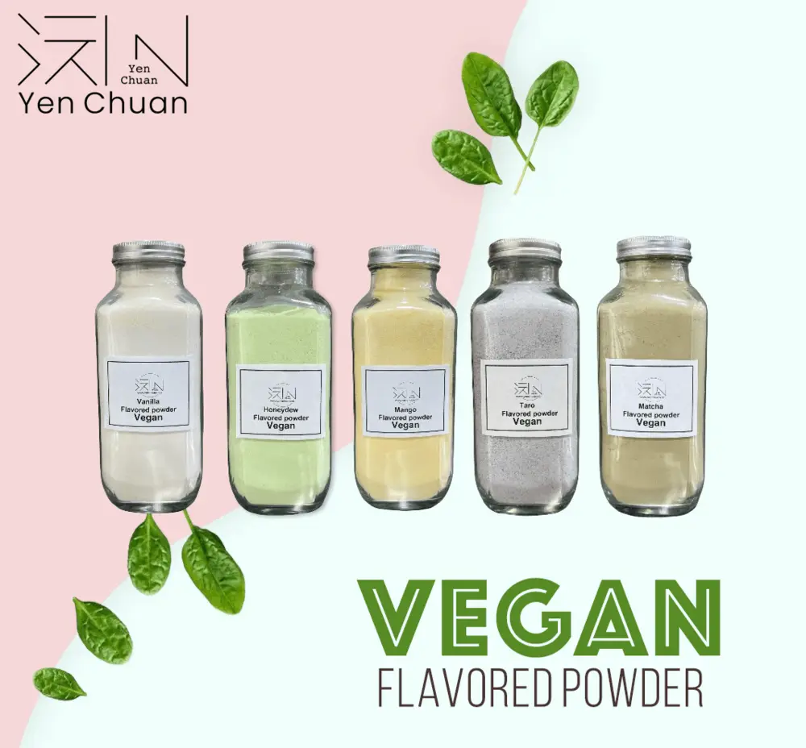

文章 / 飲品配方與資訊
Want to go green? Try vegan bubble tea!
這篇是英文原文，尚未完成繁體中文翻譯。中文選單與相關商品連結不會切回英文介面。

查看英文原文（尚未翻譯）
Vegan drinks are becoming the latest craze, and many cafes and restaurants are offering vegan options – People sipping on soy lattes and chatting over oak milkshakes are becoming a common sight. Same goes with bubble tea, many bubble tea shops proudly serve vegan-friendly drinks!
What if you want to join the bandwagon? The options seem daunting – soy milk, oak milk, almond milk, coconut milk…how do you start?
Our vegan series is here to help!
Just follow our instructions, and you’ll have a delicious cup of vegan bubble tea in no time at all!
How to make vegan bubble tea

Honeydew Melon Soda
A classic soda flavour in Japan, the sweet melon and fizzy soda water makes a great combination! Add a dollop of ice cream for good measure!
What you’ll need
How to make
Fruity Taro Shake
Fancy a healthy drink? Try our delicious fruity taro shake! The purple taro and colourful fruit is sure to brighten up anybody’s day!
What you’ll need
How to make


Fruity matcha shake
Matcha lattes are popular choices in bubble tea shops, but have you thought of mixing it with fruits? Try this with banana, kiwi, strawberry or other delicious combinations!
Want to enhance the taste even further? Try adding some rich, foamy cream top!
What you’ll need
How to make
Mango milkshake
Nothing spells Southeast Asia more than mango! With a cup of vibrant mango milkshake in hand, you’re more then equipped to beat the summer heat!
What you’ll need
How to make

Pretty easy, right?
Feel free to mix and match with other drink combinations!
Want to learn more, or have ideas for new flavours?